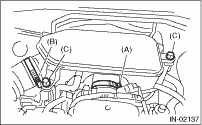

INTAKE (INDUCTION)(H4SO) > Air Intake Chamber
1. Loosen clamp (A) which connects the air intake chamber to throttle body.
2. Loosen clamp (B) which connects the duct to the air intake chamber.
3. Remove bolt (C) which secures the air intake chamber to the stay.

4. Disconnect the blow-by hoses, and then remove air intake chamber.